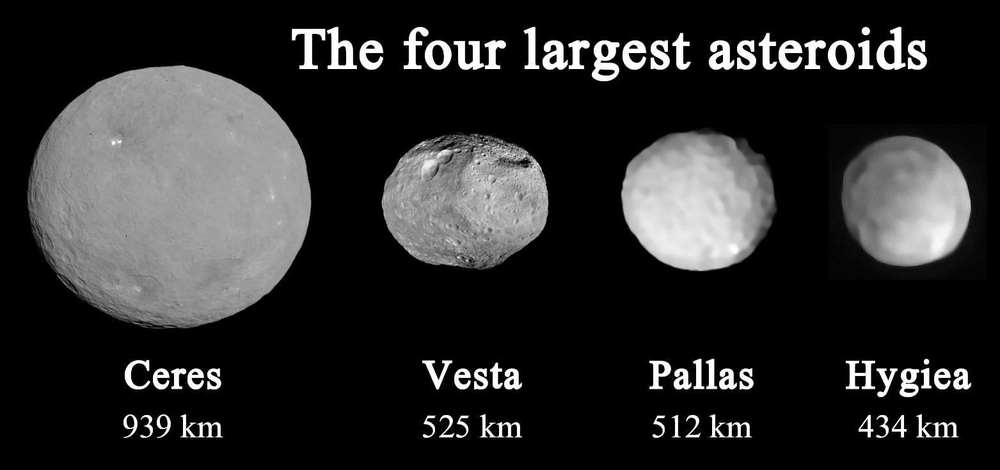

Overview
The asteroid belt is a torus-shaped region in the solar system, centred on the Sun and roughly spanning the space between the orbits of Mars and Jupiter. It contains a huge number of solid, irregularly shaped bodies called asteroids or minor planets, spread out so widely that they average about one million kilometres apart. It is the smallest and innermost known circumstellar disc in the solar system.
Formation
The asteroid belt formed from the primordial solar nebula as a group of planetesimals, the smaller precursors of planets. Gravitational perturbations from Mars and Jupiter disrupted their accretion into a full planet, imparting excess energy that shattered colliding planetesimals instead of letting them merge. As a result, about 99.9% of the belt's original mass was lost within the first 100 million years of the solar system's history.
Discovery
In 1596, Johannes Kepler predicted a planet would be found between Mars and Jupiter, based on what seemed like too large a gap in the spacing of the planets. On 1 January 1801, Giuseppe Piazzi discovered a small moving object in an orbit matching that prediction, and named it Ceres. Ceres, Pallas, Juno, and Vesta were all found within the following years, and for decades were counted among the planets before being reclassified as a new category, asteroids.
Composition
Asteroids in the belt fall into three main groups based on their spectra: carbonaceous C-type, silicate S-type, and metal-rich M-type. Carbonaceous asteroids dominate the outer belt and make up over 75% of visible asteroids, while silicate asteroids are more common toward the inner belt, and metal-rich asteroids cluster in the middle regions.
The big four
About 60% of the belt's total mass is contained in its four largest asteroids, Ceres, Vesta, Pallas, and Hygiea. Ceres alone accounts for around 39% of the belt's mass and is the only object in the asteroid belt large enough to be classified as a dwarf planet, at about 950 km in diameter. Vesta, Pallas, and Hygiea each have mean diameters under 600 km, and together with Ceres they make up the great majority of the belt's mass, with everything else in the belt sharing the remainder.
Structure
The distribution of asteroids in the belt is shaped by Kirkwood gaps, regions where an asteroid's orbital period would form a simple ratio with Jupiter's, making the orbit unstable. These gaps, discovered by Daniel Kirkwood in 1866, divide the belt into a structured set of bands rather than one continuous ring. About one third of asteroids in the belt belong to a recognisable asteroid family, sharing similar orbits that point to a common origin from the breakup of a larger parent body.
Exploration
The first spacecraft to cross the asteroid belt was Pioneer 10, entering the region in July 1972, and it has since been safely traversed by many spacecraft without incident, since the belt is far emptier than it might sound. The Dawn mission is the only spacecraft to have studied main belt asteroids from orbit for an extended period, orbiting Vesta from 2011 to 2012 before moving on to orbit Ceres from 2015 onward.